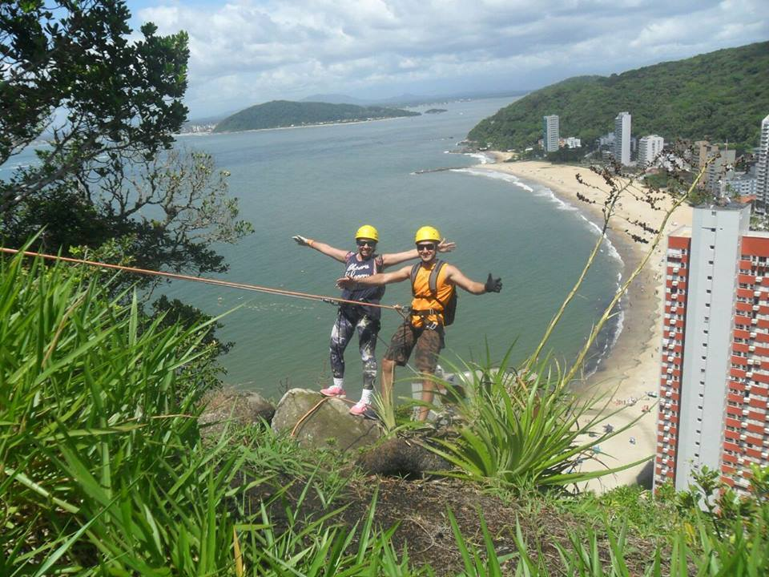

Detalhes do Roteiro
Esta é uma atividade indicada para iniciantes, exige pouco esforço físico, mas proporciona o sentimento inesquecível do que é Escalada e Rapel em rocha, deixando aquele gostinho de quero mais…
Tombado em 1989, o Morro do Boi empresta seu charme à paisagem de Caiobá. É rodeado por algumas praias encantadoras, como a Praia Bela, a Praia Mansa, a Praia Brava e a Praia dos Amores.
Serviços incluídos:
Translado in/out saindo do centro de Curitiba ou Morretes;
Instrutores especializados a técnica vertical;
Todos EPI’S requisitados por normas ao esporte;
Seguro atividade;
Fotos e filmagens da atividade.
Informações adicionais:
Levar roupas extras e de banho, caso deseje aproveitar a praia;
Calçado fechado e confortável para caminhada;
Levar protetor solar, pequena mochila para seus pertences na caminhada e atividade;
Altura do rapel: 75 metros;
Altura do morro: 160 metros acima nível do mar;
Duração da atividade: 4 horas;
Tempo de Caminhada: 30 minutos;
Atividades de aventura: Caminhada, escalaminhada;
Dificuldade: Leve/moderado;
Limite de idade: Mínimo 10 anos, não tem limite máximo;
Condicionamento físico: Normal;
Atrativos naturais: Mata atlântica, restinga, montanhas, trilhas;
Ideal para todos os públicos, atendemos grupos de escolas, empresas entre outros...
Informações importantes
- Levar roupas extras e de banho, caso deseje aproveitar a praia;
- Calçado fechado e confortável para caminhada;
- Levar protetor solar, pequena mochila para seus pertences na caminhada e atividade;
- Altura do rapel: 75 metros;
- Altura do morro: 160 metros acima nível do mar;
- Duração da atividade: 4 horas;
- Tempo de Caminhada: 30 minutos;
- Atividades de aventura: Caminhada, escalaminhada;
- Dificuldade: Leve/moderado;
- Limite de idade: Mínimo 10 anos, não tem limite máximo;
- Condicionamento físico: Normal;
- Atrativos naturais: Mata atlântica, restinga, montanhas e trilhas;
- Ideal para todos os públicos, atendemos grupos de escolas, empresas entre outros...
Tarifas
| N° de pessoas | Instrutores bilíngue | Adulto | Criança |
|---|---|---|---|
| 2 a 4 | Sim | R$ 575.00 | R$ 450.00 |
| 5 a 15 | Sim | R$ 350.00 | R$ 250.00 |
Galeria de Fotos
